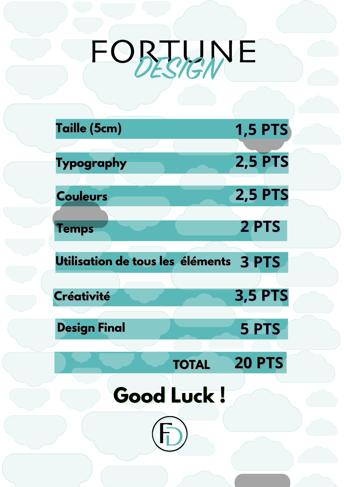

What is Fortune Design?
Fortune Design is a creativity board game.
The principle is simple: players will have to create a design using the typography, colors, and shapes they receive during the game.
Once the turn is over, the referee will draw a mission card so that players can create their design with the collected elements.
How To Play ?
Determine the order with the dice and the game can begin. Players will land on the following spaces:
- Typography → draw a typography card to discover your typography.
- Colors → draw a color card to discover your color.
- Bonus/Malus → draw a fortune card to discover your luck or misfortune.
- Prison → go to jail for one turn.
You have 3 minutes to draw your creation. The first one to finish will receive 2 points, and the player with the most points will win the game. Fortune Design provides you with a scoring grid.
Scoring Grid:
